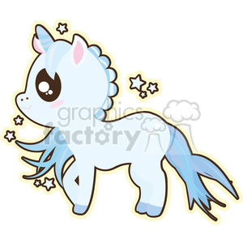

Unicorns

habitat
Unicorns live high in the sky in the clouds on rainbows!
They love the rainbows because they are so bouncy and fluffy
they also love to dance on rainbows.
Unicorns love to dance and be happy all the time,they are more happy when dancing on rainbows but less on clouds.
food
Unicorns eat sweets and cotten candy they also love to drink hot chocolate with marshmellows.
Unicorns also come down to earth where they pretend to be horses and eat lots of carrots,apples and hay.
They dont like apple juice or lemonaid so if you see one dont give it either of those things.
The type of food they hate are vegtables its least favourite vegtables are peppers!
activity
They love to run around and jump over rainbow hurdles they also they love to punch the air with their back legs.
They love and i mean love trying to jump over the moon.
They hate to hop on one foot because they always fall and hurt themselves.